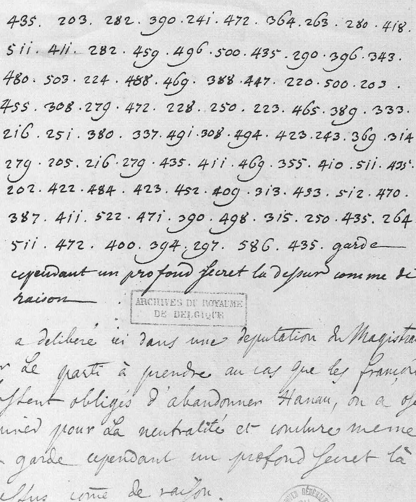

At a glanceExisting decipherment · complete
- The letters
- Three letters from Gottfried van Swieten at Bonn to Count Cobenzl, minister plenipotentiary in the Austrian Netherlands, reporting on the French armies in the Seven Years’ War. One is undated (R955); the others are of 14 January and 4 February 1759.
- Where
- DECODE R955, R957 and R956, with no decipherment recorded for them.
- The cipher
- An alphabetical list of letters and syllables with a few homophones. The 1759 table uses numbers 100–442; no key for it survives.
- How it was read
- R955 has the decipherment written under the numbers and shows the system. The 1759 table was rebuilt from the ciphertext alone by simulated annealing over alphabetical-order assignments scored by a French language model (one start in eight came out as French), then corrected by hand against the surrounding cleartext.
- What it says
- The convention leaving the revenues of Prussian Gueldre to the French, the principality of Moers handed to a prince without asking the Empress, and a sharp judgement of Soubise’s army.
- Still open
- About 21 of 553 groups in the 1759 letters, nearly all proper names.
01 The letter
R955, f. 141, undated, written while the French held Hanau (1757–58): 89 dotted groups, 202–586, with the decipherment written below them. DECODE holds two later letters of van Swieten to Cobenzl in the same file (R956, R957, 1759); they use another table, and are on their own page.

02 The 1757 table, from its own decipherment
The clear lines on f. 141 repeat the cipher word for word: “on a délibéré ici dans une députation de Magistrat sur le parti à prendre au cas que les François fussent obligés d’abandonner Hanau, on a osé opiner pour la neutralité et conclure même; on garde cependant un profond secret là-dessus comme de raison.” Aligning the two gives values that rise with the alphabet: a 202/203, ab 205, an 216, ar 220, as 223, at 224, au 228, be 241, c 250, d 279, da 280, de 282/290, en 308, er 313, et 315, fu 337, gi 343, ha 355, i 364, l 387, le 388, les 389, li 390, ma 396, ne 411, o 422, on 435, p 447, po 453, pr 455, que 465, r 469, ra 471, re 472, s 480, su 488, t 494, ta 496, ti 500, tr 503, u 511, ur 512. Each letter heads its own section and is followed by its syllables. The common units have a second number.
03 What remains uncertain
- The last numbers, 400, 297 and 586, stand inside “et conclure même”; the decipherment gives the words, but each number occurs once and the split between them is not fixed.
Full texts
The transcription and the decryption of every document on this page, so that the reading can be used and checked. Short files are shown here; all are in the repository.
R955, f. 141 (1757-58)
Gottfried van Swieten at Bonn to Count Cobenzl at Brussels, 1757-58: the magistrate deliberated what to do if the French had to abandon Hanau, dared to advise neutrality and even decided on it, but keeps it a profound secret.
Transcription
435 203 282 390 241 472 364 263 280 418 511 411 282 459 496 500 435 290 396 343 480 503 224 488 469 388 447 220 500 203 455 308 279 472 228 250 223 465 389 333 216 251 380 337 491 308 494 423 243 369 314 279 205 216 279 435 411 469 355 410 511 435 202 422 484 423 452 409 313 453 512 470 387 411 522 471 390 498 315 250 435 264 511 472 400 394 297 586 435
Decryption
# Van Swieten to Cobenzl: readings Cipher in brackets «…»; clear text of the letter around it in roman. Doubtful words marked (?), unread groups [n]. ## R955, f. 141 (undated, 1757–58) Decipherment in the letter's own clear copy below the numbers: «on a délibéré ici dans une députation de Magistrat sur le parti à prendre au cas que les François fussent obligés d'abandonner Hanau, on a osé opiner pour la neutralité et conclure même; on» garde cependant un profond secret là-dessus comme de raison. The 1759 letters (R957, R956) are a separate entry: `../swieten1759/READING.md`.
Translation
<!-- English translation of the R955 section of READING.md (Claude Opus 5.5, 23 Oct 2026): the cipher passage of Van Swieten's letter (in « »), as given by the letter's own clear copy below the numbers, with the clear words that follow it. An excerpt. --> # R955, Gottfried van Swieten to Count Cobenzl, f. 141 (undated, 1757-58): English translation «In a deputation of the Magistrate here they have deliberated on the course to take in case the French should be obliged to abandon Hanau; some have dared to vote for neutrality and even to conclude it; they» nevertheless keep a deep secret about it, as is right.
Key: key.md
04 Sources
- Archives générales du Royaume, Brussels, Secrétairerie d’État et de Guerre, inv. 1236; images and transcriptions on DECODE, record R955 (transcriber SofPe 2019).
- No printed edition or earlier decipherment of these letters was found.
Transcriptions, solver, key and readings: targets/swieten1757/ in the repository; the 1759 letters in targets/swieten1759/.
Cite this page
Daniel Bourdeau, “Gottfried van Swieten to Count Cobenzl, 1757–58”, Cyphersolver, posted 22 September 2026, updated 26 October 2026, https://cyphersolver.com/swieten1757.html.